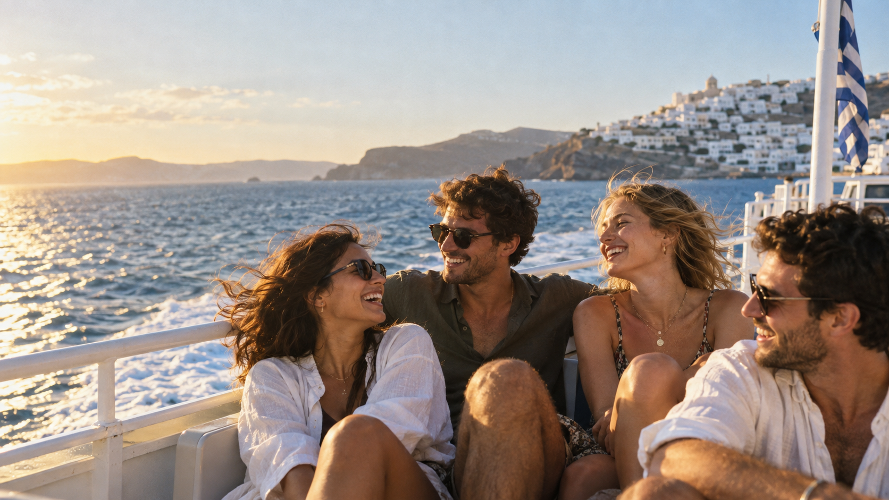

Canal days. Good company.

REAL PEOPLE. REAL JOURNEYS.
Take the long
way to a good
story.
Same places.
Different perspectives.
THE GREEK ISLANDS / BETTER TOGETHER
01 / GO SOMEWHERE GOOD
Places for the
plot twists.
Big views, small discoveries, and enough room for the best part: the people you go with.
Coffee first. Plans later.
Take the scenic way.
02 / THROUGH THEIR EYES
Travel through
their eyes.
Different people see different magic in the same place. These are glimpses of the journeys we want to make.
furtherGREECE / TOGETHER
sunsetCOPENHAGEN / SLOW DAYS
coffeeVIENNA / SMALL RITUALS
lostPRAGUE / NEW STORIES
Editorial previews for the fictional Vamo demo. Creator collaborations are a future concept, not live posts.
THIS IS THE VAMO WAY
Go for the place.
Stay for the people.
We like plans that leave space for a surprise. A city, a side street, a table that gets louder as the night goes on. The best trips are the ones you keep telling stories about.
Start your story03 / THE JOURNAL
Notes from elsewhere.
04 / MAKE IT YOURS
Okay, where
to next?
Pick a city and your kind of trip. We’ll make a simple brief you can download and build on.